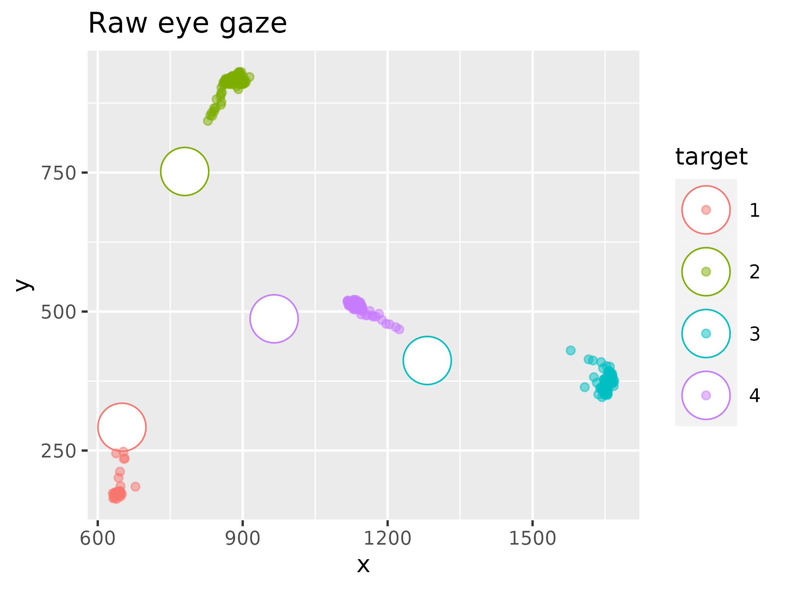
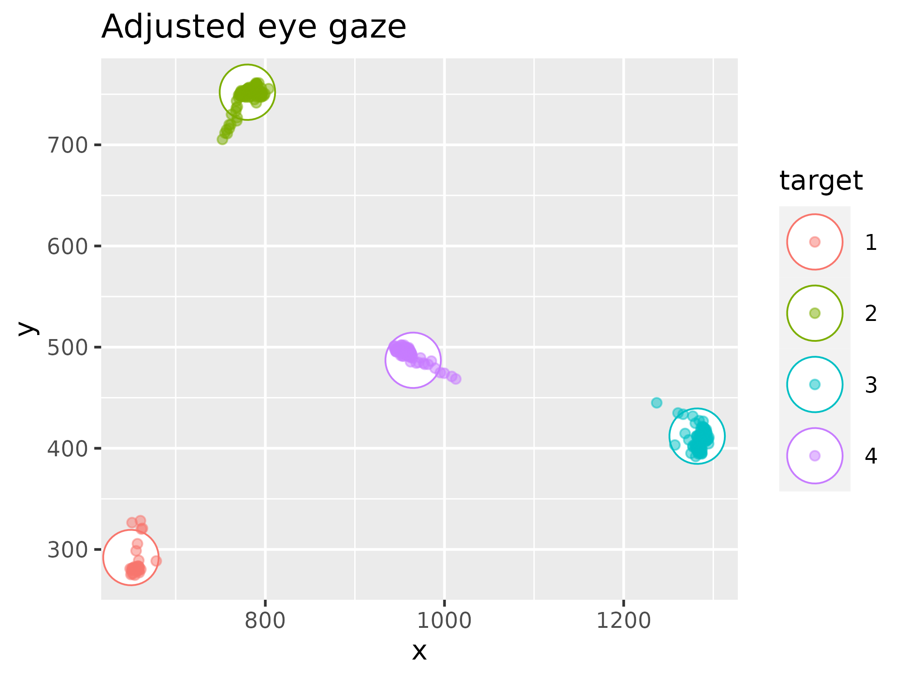

Eye gaze mapping
Alexander (Sasha) Pastukhov
2022-02-17
Source:vignettes/calibration.Rmd
calibration.RmdBidimensional regression can be used to transform the eye gaze data into a the screen coordinate system using a calibration sequence. For this, we use known target coordinates as independent variables. Please note that the example below assumes that participants fixate faithfully for most of the time and that recording artifacts, such as blinks, were already removed. This example will use the example dataset.
Plotting raw data
library(BiDimRegression)
library(dplyr)
library(ggplot2)
ggplot(data= EyegazeData, aes(x= x, y= y, color= target, fill= target)) +
geom_point(data= EyegazeData %>% group_by(target, target_x, target_y) %>% summarise(.groups="drop"),
aes(x= target_x, y= target_y), shape= 21, size= 10, fill= 'white') +
geom_point(alpha= 0.5, shape= 21) +
ggtitle('Raw eye gaze')
Using lm2 to transform the eye gaze
lm2aff <- lm2(target_x + target_y ~ x + y, EyegazeData, transformation = 'affine')
adjusted_gaze <- data.frame(predict(lm2aff))
colnames(adjusted_gaze) <- c('adjX', 'adjY')
adjusted_gaze <- cbind(EyegazeData, adjusted_gaze)
ggplot(data= adjusted_gaze, aes(x= adjX, y= adjY, color= target, fill= target)) +
geom_point(data= adjusted_gaze %>% group_by(target, target_x, target_y) %>% summarise(.groups="drop"),
aes(x= target_x, y= target_y), shape= 21, size= 10, fill= 'white') +
geom_point(alpha= 0.5, shape= 21) +
xlab('x')+
ylab('y')+
ggtitle('Adjusted eye gaze')